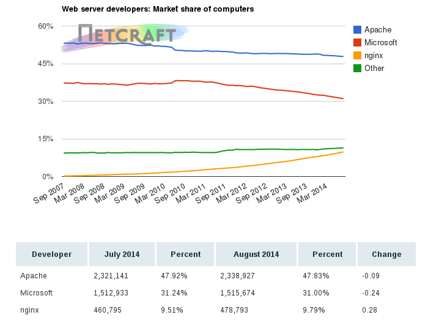

Proyecto de Software
Cursada 2014
Hoy seguimos con ...
Temario
- Repaso Clase Anterior
- Validadores
- Accesibilidad web
- Procesamiento en el Servidor
- Herramientas
- Alternativas
- PHP
- Básico
- Sesiones
Repaso - Estilos
- Permiten definir los aspectos de visualización
- Ejemplo: proyecto.css
Repaso - Estilos
Importante
- Utilizar los elementos HTML según el objetivo para lo que fueron creados.
- Ejemplo, no cambiemos los atributos de un elemento p para que sea un encabezado o un bloque inline.
Repaso - Validadores
- Permiten verificar el cumplimientos de los estándares.
- La W3C provee algunos:
- Validador HTML: http://validator.w3.org/
- Validador de Hojas de Estilos: http://jigsaw.w3.org/css-validator/
- Unicorn http://code.w3.org/unicorn
Accesibilidad web
"The power of the Web is in its universality. Access by everyone regardless of disability is an essential aspect".
- Tim Berners-Lee, W3C
Algunas Reflexiones

Algunas Reflexiones
- Según la OMS, alrededor del 15% de la población mundial, o sea más de MIL millones de personas, vive con una discapacidad.
- Entre 110 millones y 190 millones de personas tienen dificultades considerables para funcionar.
- Aproximadamente 285 millones de personas posee discapacidad visual, 39 millones son ciegas y 246 millones presentan baja visión.
http://www.who.int/mediacentre/factsheets/fs282/es http://www.who.int/mediacentre/factsheets/fs352/es/
WAI - Web Accessibility Initiative
Objetivos:
Desarrollar estrategias, pautas, recursos para hacer la Web accesible a personas con discapacidad. Pero también será accesible en otros entornos y aplicaciones, como navegador de voz, teléfono móvil, PC de automóvil. Y ante limitaciones bajo las que opere, como entornos ruidosos, habitaciones infra o supra iluminadas, entorno de manos libres.
WAI - Web Accessibility Initiative
- Para Aplicaciones de Usuario: WAI-User Agent
- Para Herramientas de Autor: WAI-Autools
- Para contenido Web: WCAG
- WCAG 1.0
- WCAG 2.0
Pautas WCAG
- Definen principios de diseño Web.
- Cada principio tiene pautas.
- Cada pauta tiene criterios testeables.
Validadores de accesibilidad
En Argentina
- Ley Nacional 26.653: Acceso a la Información pública
- Sancionada: Noviembre de 2010
- Reglamentada: Abril de 2013
- la ley
- Algunas referencias:
- Sobre la reglamentación
- El INADI
Server Side
Páginas web
Servidores Web
http://news.netcraft.com/archives/category/web-server-survey/
Procesamiento en el servidor
Existen muchas alternativas...
- CGI “Comon Gateway Interface”
- FastCGI
- APIs Nativas: NSAPI/ISAPI/Módulos Apache
- Lenguajes de Script
CGI – RFC 3875
El programa recibe sus datos de la entrada estándar (stdin) a través del CGI
- Ventajas
- Simple, se puede usar cualquier lenguaje
- Desventajas
- Sobrecarga en la creación de procesos
- Problemas de seguridad y portabilidad
Alternativas/Mejoras a CGI
Fast-CGI
- Esquema similar que CGI
- Nace para mejorar problemas de performance de CGI
Interfaces Nativas
- Se extiende la funcionalidad del servidor web mediante SAPIs (Server Application Programming Interface) - ISAPI/NSAPI
- Módulos Apache
- Ventajas
- Mayor performance
- Desventajas
- Dependientes del servidor
Nosotros, ¿qué vamos a usar?
PHP instalado en un servidor Nginx...
Aunque... para el desarrollo de nuestra aplicación, esto no es condicionante, vamos a ver algunos aspectos generales de configuración.
Herramientas
¿Qué necesitamos para arrancar?
- Servidor web: Apache/Nginx
- Intérprete PHP
- La Base de Datos: MySQL
- Algunas Soluciones:
- Soluciones LAMP/WAMP: Linux/Windows - Apache - MySQL - PHP/Perl/Python....
- Soluciones LEMP: Nginx x Apache
- Algunas herramientas:
- EasyPHP
- XAMPP
- etc...
Algunas configuraciones en el servidor Web
- ServerRoot: Indica dónde se encuentra instalado servidor web y a partir de ahí los archivos de configuración, de logs, etc.
- Listen: Puerto se atenderán las peticiones. Por defecto se utiliza el puerto 80 de TCP. También permite especificar qué direcciones IP se utilizarán (por si el servidor tuviese más de una). Ejemplo: Listen 12.12.22.12:80
- LoadModule: En el caso de Apache, permite cargar los módulos adicionales.
Algunas configuraciones en el servidor Web
- DocumentRoot o root: Directorio raíz de nuestro sitio. Generalmente se encuetra en archivo default u otro nombre en el directorio "sites-available"
- DirectoryIndex o index: Permite indicar qué página se cargará por defecto en el caso de que no se especifique ninguna en la URL.
- ErrorDocument: establece la configuración del servidor en caso de error.
Algunas configuraciones en el servidor Web
Ejemplo de configuración de Apache
Ejemplo de configuración de Ningx
PHP
Hypertext Pre-Procesor
Características Generales
- PHP es un lenguaje de scripting de propósito general que tiene una gran comunidad de usuarios.
- Se utiliza especialmente para aplicaciones Webs pero puede utilizarse para desarrollar cualquier tipo de aplicación (ver ejemplosClase3/comocli.php)
- Es interpretado.
- Es open source distribuido bajo una licencia libre similar a la de BSD, la PHP License v3.01.
- Website: http://php.net/
PHP en Aplicaciones Web
- Es server-side.
- Los scripts están embebidos en el código HTML.
- Permite construir páginas dinámicas según la solicitud del cliente y según la información disponible en el servidor.
- Se puede correr con la mayoría de los servidores web conocidos (como CGI/FastCGI/FPM/módulo del servidor).
- Es independiente de la plataforma donde corre.
- Tiene un soporte muy amplio para base de datos.
- Provee soporte para programación orientada a objetos.
PHP en Aplicaciones Web
http://w3techs.com/technologies/overview/programming_language/all
PHP en Aplicaciones Web
Modelo de ejecución
Configuración: php.ini
- Se lee cuando arranca PHP.
- Algunas opciones se pueden modificar usando la función ini_set.
- La localización por defecto de php.ini es definida en tiempo de compilación.
- Permite habilitar las extensiones que se desee.
- Algunas consideraciones:
- Las líneas que comienzan con ; se ignoran.
- [php] delimitan una sección – también ignorado.
- Los valores lógicos son: true, on, yes, false, off, no, none.
- Ejemplo:
- register_globals = off
- track_errors = yes
php.ini
- Mostrar los errores al cliente:
- display_errors = On
- ¿Qué errores mostrar?
- error_reporting = E_ALL | E_STRICT
Nota: E_STRICT Antes de PHP 5.4 no estaba en E_ALL
php.ini
- Mostrar los errores al arranque:
- display_startup_errors = On
- Poner los archivos en un file:
- log_errors = On
- error_log = php_errors.log
Más info: http://www.php.net/manual/en/errorfunc.configuration.php
Mi primer script PHP
PHP: Lo básico
- Sintaxis basada en C
- Existen constantes predefinidas:
- PHP_VERSION: la versión de PHP utilizada
- PHP_OS: el nombre del sistema operativo sobre el cual está ejecutándose PHP
- etc.
- Variables predefinidas (superglobals)
- $GLOBALS, $_SERVER, $_GET, $_POST, $_COOKIES, $_REQUEST, $_SESSION, etc.
- Ejemplo: Para obtener DOCUMENT_ROOT se usará $_SERVER['DOCUMENT_ROOT']
- Funciones útiles:
- isset() - determina si una variables fue definida
- unset() - “des-define” una variable previamente definida y libera la memoria utilizada.
Variables Externas
Cuando se envía un formulario para que se lo procese mediante un script PHP, todas las variables que éste define podrán ser utilizados automáticamente por el script.
Ejemplo:
<form method="get" action="proceso_formu.php"> <label for="nombre">Nombre</label> <input type="text" name="nombre"> <label for="apellido">Apellido</label> <input type="text" name="apellido"> <label for="turno">Turno de teoría:</label> <select name="turno"> <option>Martes</option> <option>Viernes</option> </select> <input type="submit" value="Enviar"> </form>
$_REQUEST, $_GET, $POST
Veamos el ejemplo:
$_REQUEST, $_GET, $POST
Usemos las variables externas adecuadas según los requerimientos de la aplicación.
Usando Archivos
- Existen varias funciones disponibles para manejar archivos en PHP.
- Algunas funciones útiles:
- fopen(): Abre un archivo o URL
- filesize(): Obtiene el tamaño del archivo (en bytes)
- fileperms(): Obtiene los permisos del archivo
- file_exists(): Verifica si un archivo existe
- fgets(), fputs(): Lee/Escribe una línea a un archivo.
- fread(), fwrite()....
- etc.
Usando Archivos
Un contador de visitas sensillo
Include y require
- include() y require(): Permiten incluir y evaluar un archivo dentro de un script.
- Si la inclusión ocurre dentro de una función, todo el código contenido en el archivo incluido se comportará como si hubiese sido definido dentro de esta función.
- Cuando se incluye un archivo, el intérprete sale del modo PHP y entra en modo HTML al principio del archivo referenciado, y vuelve de nuevo al modo PHP al final.
- La diferencia entre estas dos funciones es que include() produce un warning mientras que require() produce un error fatal.
- requiere_once(), include_once()
Cookies
- Básicamente, son “tokens” en el requerimiento HTTP que permite identificar de alguna manera al cliente en el servidor.
- Se almacenan en el cliente.
- Muy usado por ser HTTP un protocolo sin estado.
- Formato: nombreCookie=valor;expires=fecha;
- PHP las considera variables externas: Usa $_COOKIE (un arreglo con las cookies generadas).
- Mediante la función setcookie() es posible grabar cookies en el cliente.
- Veamos un ejemplo de uso de cookies
Sesiones
Es un mecanismo para conservar ciertos datos a lo largo de varios accesos.
- Permite registrar un número arbitrario de variables que se conservarán en las siguientes peticiones.
- Identificador: A cada visitante se le asigna un identificador único, llamado session id (identificador de sesión).
- Hay dos formas de propagar un identificador de sesión:
- Mediante cookies
- A través de la URL.
Sesiones
- Algunas funciones:
- session_start(): Inicializa los datos de una sesión.
- session_destroy(): Destruye los datos guardados en una sesión.
- session_id(): recupera o modifica el valor de la sesión.
- Debe ubicarse antes que cualquier salida al browser.
- Si no existe un session ID, session_start() lo crea e inicializa un arreglo vacío denominado $_SESSION.
Sesiones
- Los archivos con los datos de la sesión se generan en el servidor, usualmente en el directorio tmp del servidor.
- El cliente sólo guarda el session Id
Veamos el ejemplo de sesiones
Referencias
- La iniciativa WAI de la W3C: http://www.w3.org/WAI/
- WCAG 2.0: http://www.w3.org/TR/WCAG20/#guidelines
- WCAG 1.0 vs WCAG 2.0: http://www.w3.org/TR/2006/WD-WCAG20-20060427/appendixD.html
- Otras lecturas: http://www.slideshare.net/frontdays/sobrevivir-a-wcag20
- Evaluando accesibilidad: http://www.w3.org/WAI/eval/Overview
- Curso de la Facultad: Pedir usuario y clave